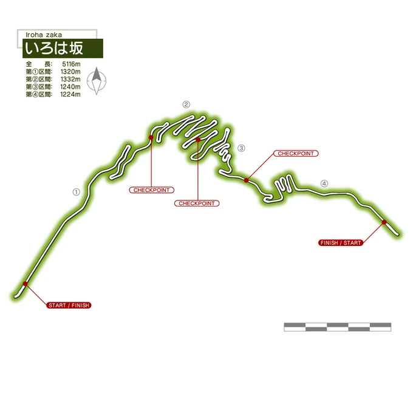
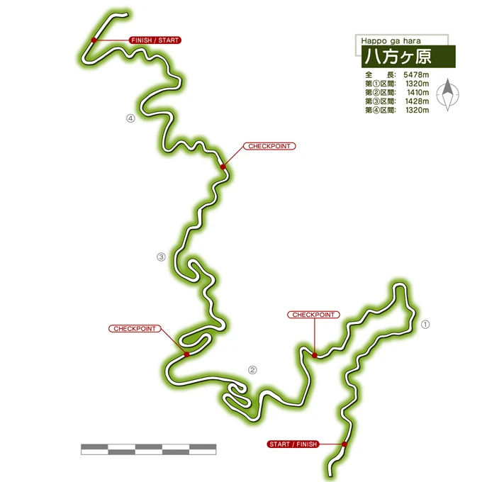

TOCHIGI
Nestled to the north of Gunma, Tochigi Prefecture offers a unique racing landscape that rivals its neighboring region in both beauty and challenge. Known for its mountainous terrain, Tochigi provides an array of winding roads, sharp turns, and steep inclines that attract street racers seeking a new arena to test their skills. The winding mountain passes of Tochigi, particularly those near the Nikko area, are well-known within the racing community for their technical difficulty and thrilling driving conditions
The roads here are a blend of wide, open stretches and tight, intricate curves, providing a perfect environment for both speed enthusiasts and those who specialize in precision driving. The famed Nikko Iroha-zaka, a twisting mountain road lined with ancient trees, is one of the region's most notorious passes. With its narrow lanes, sharp hairpin turns, and frequent fog, Iroha-zaka offers one of the most difficult challenges for any driver daring to take on its serpentine path. The sharp gradients and lack of guardrails make every race here a battle between driver and mountain, where only the boldest can push their limits without slipping into disaster.
In addition to the mountain roads, Tochigi's diverse landscapes also host more open racing routes, where drivers can stretch their cars’ legs and reach high speeds. These flat-out sections provide a stark contrast to the technical mountain passes, allowing racers to showcase their acceleration and top-end speed. Whether weaving through dense forests or charging along wide-open roads, Tochigi’s unique mix of terrain creates a racing environment unlike any other in the region.
Racing culture in Tochigi is as competitive as it is fierce. The prefecture is home to a number of local racing teams that defend their honor against visitors from Gunma, Saitama, and beyond. These rivalries often play out on the challenging mountain roads, with the roads themselves acting as the final judge of skill. Whether it’s team battles or one-on-one duels, Tochigi’s roads are constantly alive with the sounds of high-performance engines and the screech of tires on sharp corners.
The area also fosters a strong car culture, with numerous garages and tuning shops dotting the region, offering services to fine-tune everything from street racers’ engines to their suspension systems. The atmosphere in Tochigi is one of innovation and passion, where enthusiasts gather to share their knowledge and skills, constantly pushing the limits of what their cars—and themselves—can do.
Tochigi Prefecture is more than just a scenic region—it is a battleground for racers who seek to prove themselves on some of the most unpredictable and thrilling roads in Japan. From the technical difficulty of mountain passes to the exhilarating speed of its open roads, Tochigi offers a unique combination of challenges and rewards, cementing its place as a central hub for street racing in the country.
Momiji Line

Momiji Line (もみじライン Momiji Rain) is the home course of Seven Star Leaf. It is located in Nikko, Tochigi. This is where Project D's first battle in the Tochigi Prefecture is held, notably where Toru attempts to use Takumi's lidless gutter shortcut technique only to fail in doing so.
Important Battles
Racers |
Cars |
Specialization |
|---|---|---|
Takumi Fujiwara vs Toru Suetsugu |
AE86 vs NA6CE |
Downhill |
Keisuke Takahashi bs Atsuro Kawai |
FD3S vs ER34 |
Uphill/Downhill |
Extra information
Tucked away in the heart of Tochigi Prefecture, the Momiji Line is a lesser-known but highly revered road among street racing enthusiasts. Known for its stunning autumn scenery, the road meanders through dense forests, steep mountain slopes, and sharp curves, making it a picturesque yet dangerous route for anyone brave enough to race on it. The Momiji Line offers a rare combination of scenic beauty and technical difficulty, creating the perfect environment for drivers who want to test their skill while surrounded by nature’s grandeur.
The road itself winds its way up through the mountains, offering a series of challenging twists and turns that demand both speed and precision. The tight corners and rapid elevation changes require drivers to have exceptional handling skills, as there is little room for error on this narrow, tree-lined path. One misstep on the Momiji Line could lead to a loss of control, sending drivers tumbling off the road or into the guardrails. For this reason, it has earned a reputation as a place where only the most experienced and confident racers dare to compete.
What makes the Momiji Line particularly unique is its seasonal beauty. During autumn, the road is lined with vibrant red and orange maple leaves, offering breathtaking views that contrast sharply with the high-speed action unfolding on the tarmac. The vibrant colors and the often-damp roads in fall add an extra layer of difficulty to racing here, as drivers must contend with unpredictable conditions that can shift from dry to slippery in an instant.
In addition to the challenging terrain, the Momiji Line also offers moments of respite, with stretches of road that allow for brief acceleration before entering another sharp corner. These moments of high-speed racing are fleeting, however, as the constant change in elevation and the sharpness of the turns keep drivers focused and on edge throughout the entire route.
The Momiji Line is not just a racing venue—it’s a place that brings drivers closer to nature while testing their ability to conquer the road. It is the kind of route where the thrill of the race and the beauty of the surroundings blend together, offering a racing experience that engages both mind and senses. For those who master the Momiji Line, the road becomes a testament to their skill and their ability to handle the unexpected, making it a coveted challenge for anyone looking to prove their worth behind the wheel.
Irohazaka
Nestled in the rugged hills of Tochigi Prefecture, Irohazaka is one of the most famous and challenging mountain passes in Japan, known for its intense curves and dramatic elevation changes. With its narrow, winding road that twists through the dense forests of the Nikko National Park, Irohazaka presents a daunting challenge for any driver. It is a road that demands equal parts power, precision, and finesse—qualities that make it a coveted destination for street racers who seek to test their skill on one of the most unforgiving routes in the country.
The pass is divided into two sections: the lower Irohazaka and the upper Irohazaka. The lower section is particularly notorious for its steep gradient and sharp hairpin turns, forcing drivers to handle extreme inclines while navigating narrow corners at high speeds. One mistake can send a car off the edge of the road, making it a place where only the most skilled drivers dare to push the limits. The upper Irohazaka, while a bit more open, still presents numerous challenges, with tight, technical turns that require absolute control.
Racing on Irohazaka is about balancing raw power with delicate handling. The road’s steep inclines demand a car that can accelerate quickly without losing control, while the many sharp turns require precise steering and braking techniques. The combination of the constant elevation changes, tight corners, and unpredictable weather conditions—fog, rain, or even snow in winter—make it an especially difficult track to master. The road is often wet or slick, adding another layer of difficulty to an already challenging route.
What makes Irohazaka particularly unique is its historical and cultural significance. The pass’s name comes from the Japanese syllabary (iroha), referencing an ancient poem, and the route itself has been an important landmark for centuries. For racers, Irohazaka is not just a physical challenge but a symbolic one—a place where legends are made, and where the finest drivers prove their worth.
Despite its challenges, the road's beauty is undeniable. The lush forests, the mist that often settles in the early morning, and the sweeping views of the surrounding mountains make Irohazaka a visually striking route. Racing through these scenes, however, demands full attention. Every twist and turn can be dangerous, and drivers must be prepared for sudden changes in road conditions or visibility.
Irohazaka has become a proving ground for some of the best racers in Japan, with both local drivers and outsiders seeking to claim victory on its legendary roads. It is a place where technique, speed, and nerves of steel come together to create one of the most exhilarating experiences in the world of street racing. Conquering Irohazaka isn’t just about crossing the finish line—it’s about mastering a mountain pass that has stood the test of time as a true challenge for the most skilled drivers.
Enna Skyline

Important Battles
Racers |
Cars |
Specialization |
|---|---|---|
Takumi Fujiwara vs Daiki Ninomiya |
AE86 vs EK9 |
Downhill |
Keisuke Takahashi vs Smiley Sakai |
FD3S vs DC2 |
Uphill/Downhill |
Extra Information
Located in Tochigi Prefecture, the Enna Skyline is a legendary stretch of road that offers a unique combination of fast-paced racing and stunning views, making it one of the most coveted routes for street racers in the region. Known for its smooth, flowing curves and high-speed straights, the Enna Skyline has become a popular destination for those looking to push their cars to the limit while navigating through the challenging elevations of the mountainous landscape.
Unlike the tight, technical mountain passes of other famous racing routes, the Enna Skyline offers a more fluid driving experience, with long, sweeping corners that demand high-speed control and precision. The road's gentle curves allow for extended acceleration and drifting, making it a favorite for racers who specialize in maintaining high speed while maintaining perfect car control through extended arcs. It’s a place where the roar of the engine and the squeal of tires echo through the mountains as drivers fight to maintain their momentum without losing grip.
However, despite its relatively open layout, the Enna Skyline is not without its challenges. The road climbs steadily as it twists through the hills, testing both a car's power and a driver's ability to handle fast ascents and sharp declines. As the road reaches higher elevations, the weather can become unpredictable, with fog and mist frequently shrouding the path, making visibility a major concern for even the most experienced drivers. The road surface can also vary, with sections that are smooth and grippy, while others may be worn down or littered with loose gravel, demanding constant attention and adjustment from the driver.
The Enna Skyline is not just about speed; it's also a test of timing and rhythm. Racers must maintain the perfect balance between accelerating out of turns and preparing for the next curve or descent. Each section of the road flows into the next, and the key to conquering the Enna Skyline lies in maintaining momentum throughout, never overcommitting to one turn at the cost of the next.
What sets the Enna Skyline apart from other racing routes is its panoramic views. As the road climbs up and over the mountains, it opens up to reveal sweeping vistas of the valley below, with forests and distant peaks stretching out into the horizon. While many racers are focused on the track itself, the natural beauty of the Enna Skyline provides a thrilling contrast to the high-speed chaos, making it one of the most scenic—and adrenaline-fueled—roads in Tochigi Prefecture.
For those who conquer the Enna Skyline, it becomes more than just a race; it’s a celebration of skill, speed, and the sheer exhilaration of mastering one of Tochigi’s most iconic roads. Whether you're testing the limits of your car or racing against the clock, the Enna Skyline offers an experience that blends the rush of high-speed competition with the challenge of a truly dynamic and demanding course.
Happogahara
Happogahara (八方ヶ原) is the home course of the Todo School. It is located in Nasushiobara, Tochigi. This is where Takumi Fujiwara battles professional driver Tomoyuki Tachi in Fourth Stage.
Important Battles
Racers |
Cars |
Specialization |
|---|---|---|
Takumi Fujiwara vs Tomoyuki Tachi |
AE86 vs EK9 |
Inbound |
Extra Information
Happogahara Touge, nestled in the mountainous heart of Tochigi Prefecture, is a winding and treacherous pass that demands the full attention of anyone brave enough to tackle its serpentine roads. The narrow, cliffside route curves relentlessly through thick forests, with sharp turns that come at you fast, offering little margin for error.
In the early morning, the mist often lingers over the road, cloaking the area in a surreal, otherworldly haze. Drivers who frequent the pass know that it's not just about speed—it's about precision and control. Every corner has a rhythm, and the best know how to dance with it, tapping into a deep, almost instinctual understanding of the road's subtle shifts.
The pass is notorious for attracting skilled drivers, drawn by its challenge. It’s here that newcomers test their mettle, and where seasoned veterans push themselves to the limit. Those who make it through without losing their nerve gain more than just respect—they earn a reputation. But the road can be unforgiving. One wrong move, and it could be the last.
As the sun sets, the pass takes on a different feel—darker, quieter, with the road illuminated only by the glow of headlights. It’s a place where competition is always in the air, but so is the feeling that something else, something deeper, drives those who come here.
MAIN MENU